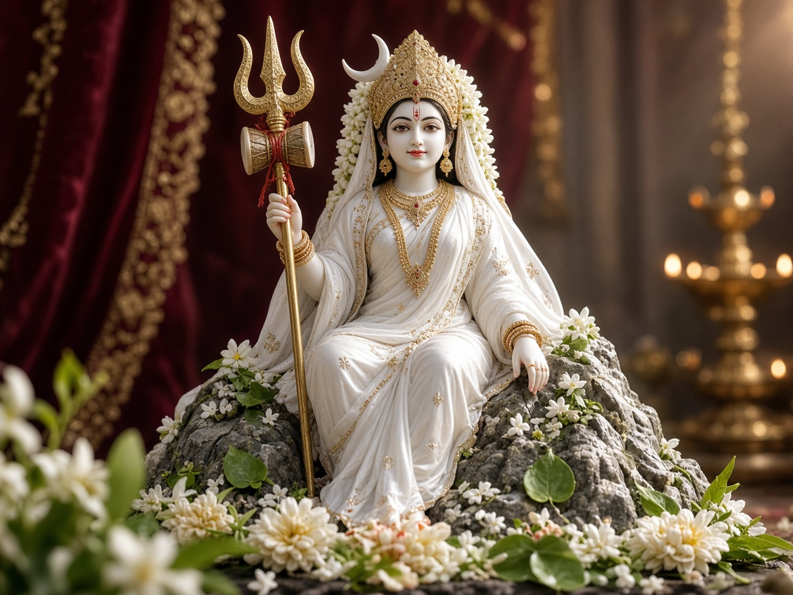
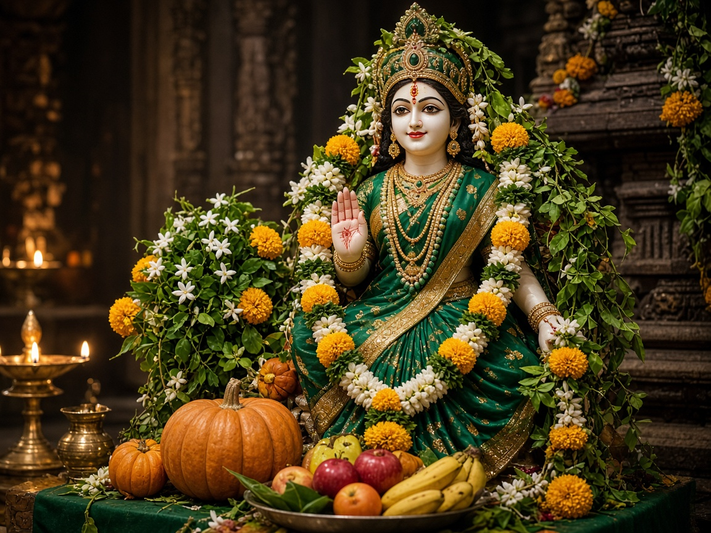
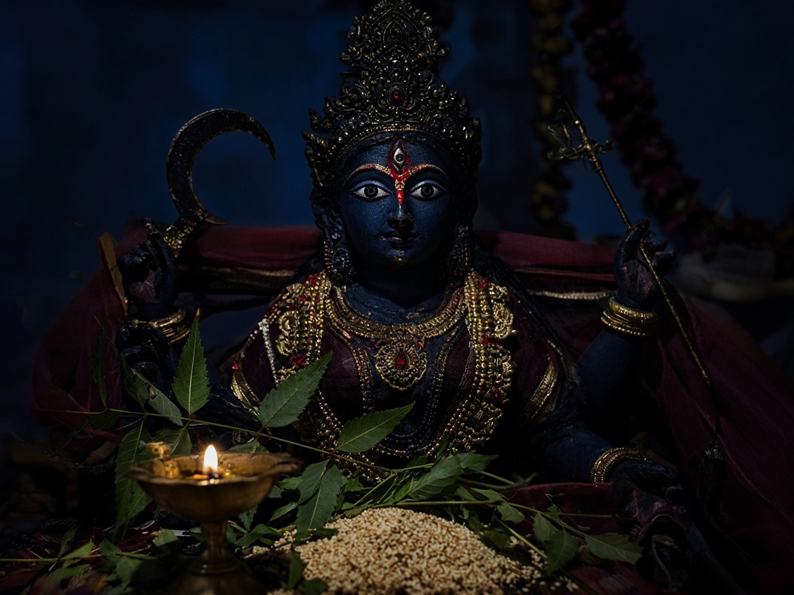
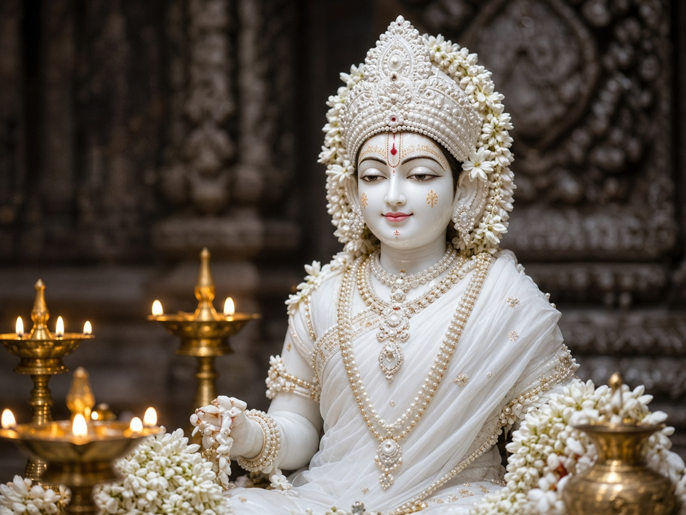
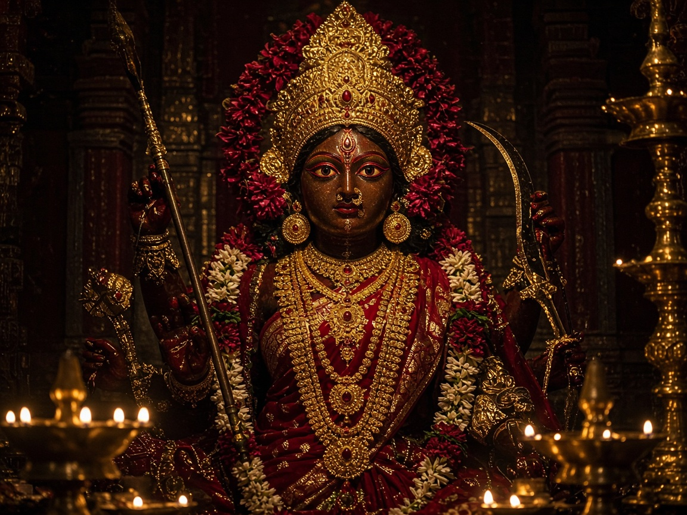
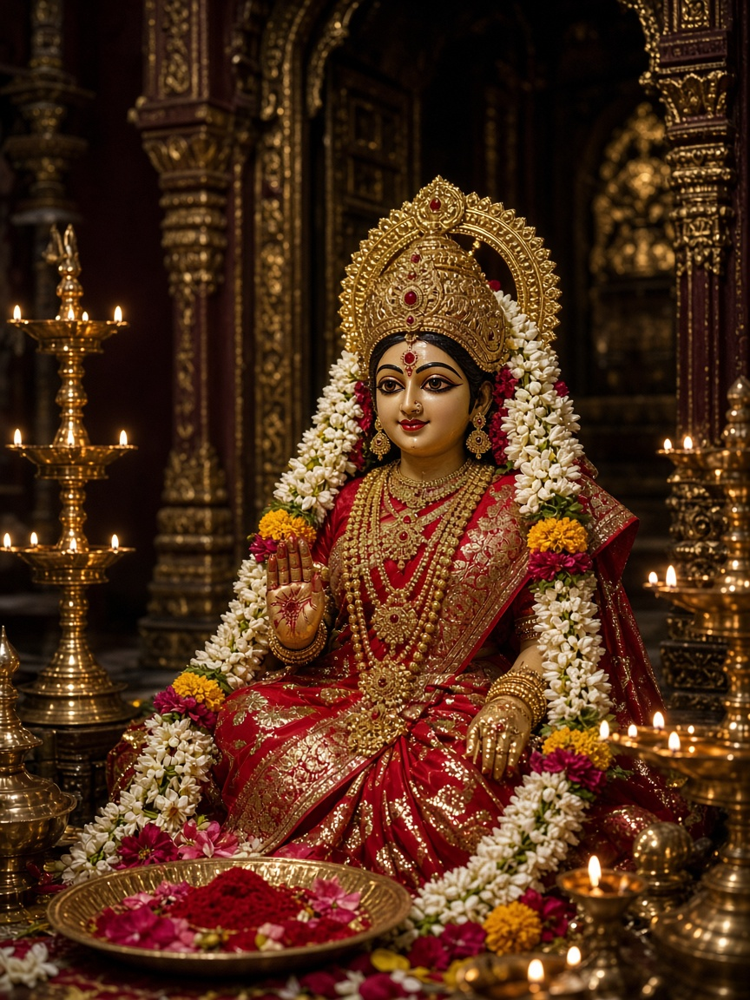
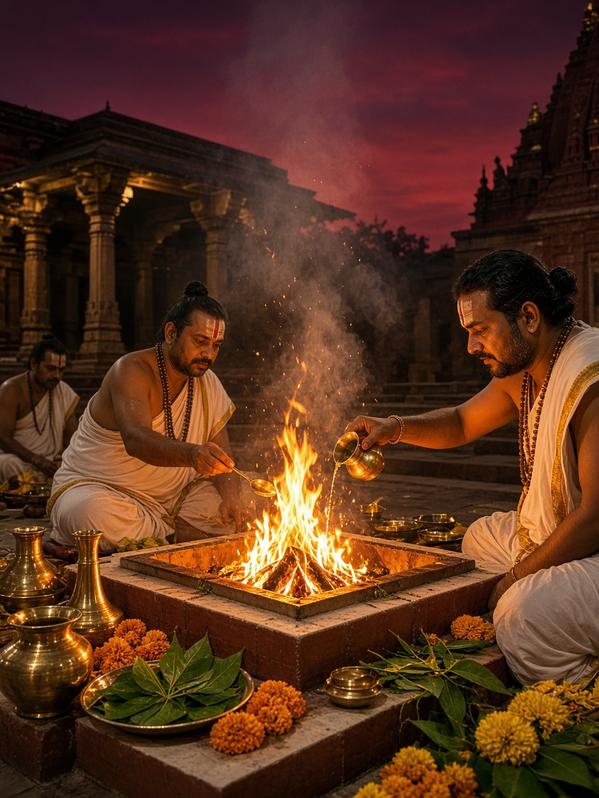
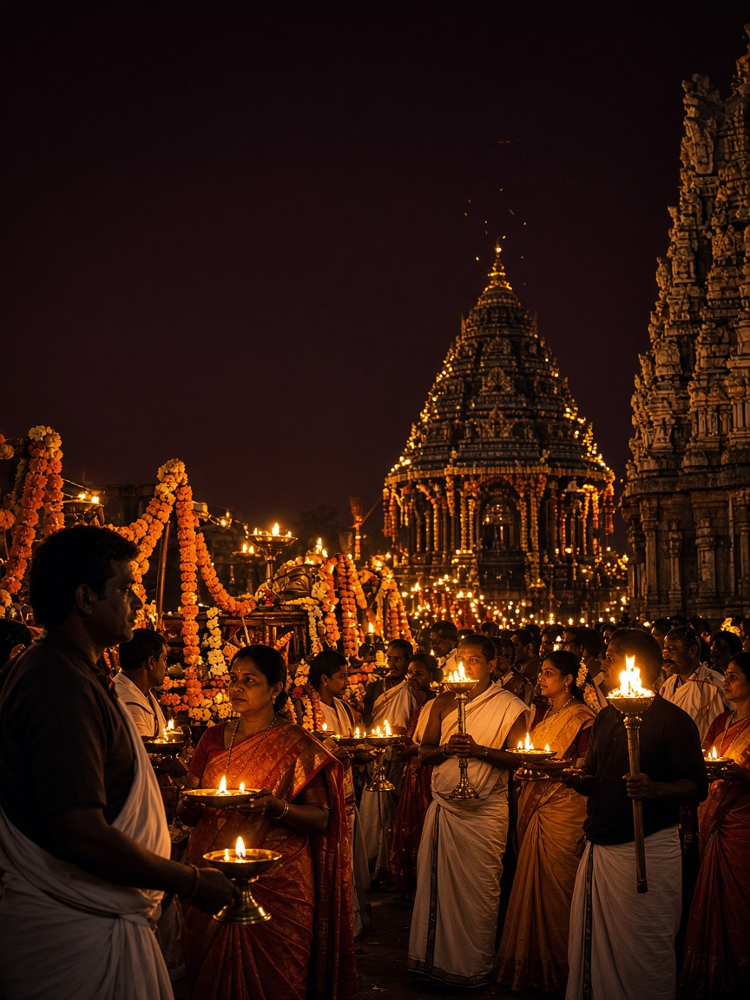

Hirekerur · Haveri · Karnataka
Sri Durgadevi Temple
ನವರಾತ್ರಿ ನಿಮಿತ್ತ ದಶ ಹೋಮಗಳು — 11–20 ಅಕ್ಟೋಬರ್ 2026. ಶ್ರೀ ಸಂತೋಷ್ ಭಟ್ ಗುರೂಜಿ ನಡೆಸುವ ವಿಶೇಷ ಹೋಮಗಳಲ್ಲಿ ಭಾಗಿಯಾಗಿ.
Navaratri begins in
About the Temple
Guardian of Hirekerur’s sacred lake
Nestled beside the vast Durga Devi Kere in Hirekerur, Haveri district, Sri Durgadevi Temple has long been a centre of Shakti worship for devotees across Karnataka and neighbouring Maharashtra.
During Sharad Navaratri, the temple resonates with nine days of Alankara, Abhisheka, and Chandi/Durga Homa. Each day honours a form of the Goddess, culminating in Vijayadashami Poornahuti — a sankalpa of victory, protection, and community seva.
The triennial Durgadevi Jatra draws tens of thousands; Navaratri renews that devotion every autumn through disciplined ritual, annadana, and collective prayer.
ನವರಾತ್ರಿ 2026
ನವರಾತ್ರಿ ನಿಮಿತ್ತ ದಶ ಹೋಮಗಳು
ಹಿರೇಕೆರೂರು ಗ್ರಾಮ ದೇವತೆ ಶ್ರೀ ದುರ್ಗಾದೇವಿ ದೇವಸ್ಥಾನದಲ್ಲಿ 11–20 ಅಕ್ಟೋಬರ್ 2026ರಲ್ಲಿ ನಡೆಯುವ ಹತ್ತು ವಿಶೇಷ ಹೋಮಗಳ ವಿವರ.
-

ದಿನ 1 11 ಅಕ್ಟೋಬರ್ 2026 · ಭಾನುವಾರಶೈಲಪುತ್ರಿ ದೇವಿಯ ಹೋಮ
ನವರಾತ್ರಿ ದಶ ಹೋಮಗಳ ಪ್ರಾರಂಭ — ಪರ್ವತಾಧಿಷ್ಠಿತ ಶೈಲಪುತ್ರಿ ದೇವಿಯ ಹೋಮ. ಸ್ಥಿರತೆ, ಶುದ್ಧಿ ಮತ್ತು ನೂತನ ಸಂಕಲ್ಪಕ್ಕಾಗಿ ಪ್ರಾರ್ಥನೆ.
- ವರ್ಣ
- ಬಿಳಿ
- ವಿಶೇಷ ಹೋಮ
- ಶೈಲಪುತ್ರಿ ದೇವಿಯ ಹೋಮ
-
ದಿನ 2 12 ಅಕ್ಟೋಬರ್ 2026 · ಸೋಮವಾರ
ಬ್ರಹ್ಮಚಾರಿಣಿ ದೇವಿಯ ಹೋಮ
ತಪಸ್ಸು ಮತ್ತು ಜ್ಞಾನದ ದೇವಿ ಬ್ರಹ್ಮಚಾರಿಣಿ ಹೋಮ. ಇಂದ್ರಿಯ ನಿಗ್ರಹ, ವಿದ್ಯೆ ಮತ್ತು ಆಧ್ಯಾತ್ಮಿಕ ಶಕ್ತಿಗಾಗಿ ಭಕ್ತರ ಪ್ರಾರ್ಥನೆ.
- ವರ್ಣ
- ಕೆಂಪು
- ವಿಶೇಷ ಹೋಮ
- ಬ್ರಹ್ಮಚಾರಿಣಿ ದೇವಿಯ ಹೋಮ
-
ದಿನ 3 13 ಅಕ್ಟೋಬರ್ 2026 · ಮಂಗಳವಾರ
ಚಂದ್ರಘಂಟಾ ದೇವಿಯ ಹೋಮ
ಚಂದ್ರಾಕೃತಿ ಘಂಟೆಯನ್ನು ಹೊಂದಿದ ಚಂದ್ರಘಂಟಾ ದೇವಿಯ ಹೋಮ — ಧೈರ್ಯ, ರಕ್ಷಣೆ ಮತ್ತು ಶತ್ರುಗಳ ನಾಶಕ್ಕಾಗಿ ಪೂಜೆ.
- ವರ್ಣ
- ಚಿನ್ನದ ಹಳದಿ
- ವಿಶೇಷ ಹೋಮ
- ಚಂದ್ರಘಂಟಾ ದೇವಿಯ ಹೋಮ
-

ದಿನ 4 14 ಅಕ್ಟೋಬರ್ 2026 · ಬುಧವಾರಕೂಷ್ಮಾಂಡ ದೇವಿಯ ಹೋಮ
ಸೃಷ್ಟಿ ಶಕ್ತಿಯ ರೂಪ ಕೂಷ್ಮಾಂಡ ದೇವಿಯ ಹೋಮ. ಆರೋಗ್ಯ, ಸಮೃದ್ಧಿ ಮತ್ತು ಕುಟುಂಬ ಕಲ್ಯಾಣಕ್ಕಾಗಿ ಆರಾಧನೆ.
- ವರ್ಣ
- ಹಸಿರು
- ವಿಶೇಷ ಹೋಮ
- ಕೂಷ್ಮಾಂಡ ದೇವಿಯ ಹೋಮ
-
ದಿನ 5 15 ಅಕ್ಟೋಬರ್ 2026 · ಗುರುವಾರ
ಸ್ಕಂದಮಾತಾ ದೇವಿಯ ಹೋಮ
ಸ್ಕಂದನನ್ನು ಹೊತ್ತ ಸ್ಕಂದಮಾತಾ ದೇವಿಯ ಹೋಮ — ಮಾತೃತ್ವ, ಸಂತಾನ ಭಾಗ್ಯ ಮತ್ತು ಕುಟುಂಬ ರಕ್ಷಣೆಗಾಗಿ ಪ್ರಾರ್ಥನೆ.
- ವರ್ಣ
- ಕಿತ್ತಳೆ
- ವಿಶೇಷ ಹೋಮ
- ಸ್ಕಂದಮಾತಾ ದೇವಿಯ ಹೋಮ
-
ದಿನ 6 16 ಅಕ್ಟೋಬರ್ 2026 · ಶುಕ್ರವಾರ
ಕಾತ್ಯಾಯಿನಿ ದೇವಿಯ ಹೋಮ
ಮಹಿಷಾಸುರ ಮರ್ದಿನಿ ರೂಪ ಕಾತ್ಯಾಯಿನಿ ದೇವಿಯ ಹೋಮ. ವಿವಾಹ, ವಿಜಯ ಮತ್ತು ದುಷ್ಟ ಶಕ್ತಿ ನಿವಾರಣೆಗಾಗಿ ಆರಾಧನೆ.
- ವರ್ಣ
- ರಾಜಮರೂನ್
- ವಿಶೇಷ ಹೋಮ
- ಕಾತ್ಯಾಯಿನಿ ದೇವಿಯ ಹೋಮ
-

ದಿನ 7 17 ಅಕ್ಟೋಬರ್ 2026 · ಶನಿವಾರಕಾಳರಾತ್ರಿ ದೇವಿಯ ಹೋಮ
ಭಯ ನಿವಾರಕ ಕಾಳರಾತ್ರಿ ದೇವಿಯ ಹೋಮ. ಅಜ್ಞಾನ, ನಕಾರಾತ್ಮಕತೆ ಮತ್ತು ದೋಷ ನಿವಾರಣೆಗಾಗಿ ಪ್ರಾರ್ಥನೆ.
- ವರ್ಣ
- ಗಾಢ ನೀಲಿ / ಕಪ್ಪು
- ವಿಶೇಷ ಹೋಮ
- ಕಾಳರಾತ್ರಿ ದೇವಿಯ ಹೋಮ
-

ದಿನ 8 18 ಅಕ್ಟೋಬರ್ 2026 · ಭಾನುವಾರಮಹಾಗೌರಿ ದೇವಿಯ ಹೋಮ
ಶುದ್ಧತೆ ಮತ್ತು ಶಾಂತಿಯ ರೂಪ ಮಹಾಗೌರಿ ದೇವಿಯ ಹೋಮ. ಮನಸ್ಸು ಮತ್ತು ಕರ್ಮಗಳ ಶುದ್ಧೀಕರಣಕ್ಕಾಗಿ ಆರಾಧನೆ.
- ವರ್ಣ
- ಶುದ್ಧ ಬಿಳಿ
- ವಿಶೇಷ ಹೋಮ
- ಮಹಾಗೌರಿ ದೇವಿಯ ಹೋಮ
-

ದಿನ 9 19 ಅಕ್ಟೋಬರ್ 2026 · ಸೋಮವಾರದುರ್ಗಾಗೌರಿ ಚಾಮುಂಡಿ ಹೋಮ
ದುರ್ಗಾಗೌರಿ ಚಾಮುಂಡಿ ಹೋಮ — ಶಕ್ತಿ, ರಕ್ಷಣೆ ಮತ್ತು ದುಷ್ಟ ನಿವಾರಣೆಗಾಗಿ ವಿಶೇಷ ಆರಾಧನೆ.
- ವರ್ಣ
- ಕೆಂಪು / ಚಿನ್ನ
- ವಿಶೇಷ ಹೋಮ
- ದುರ್ಗಾಗೌರಿ ಚಾಮುಂಡಿ ಹೋಮ
-
ದಿನ 10 20 ಅಕ್ಟೋಬರ್ 2026 · ಮಂಗಳವಾರ
ಮಹಾಸುರಮರ್ದಿನಿ ದೇವಿಯ ಹೋಮ
ದಶ ಹೋಮಗಳ ಪೂರ್ಣಾಹುತಿ — ಮಹಾಸುರಮರ್ದಿನಿ ದೇವಿಯ ಹೋಮ. ವಿಜಯ, ರಕ್ಷಣೆ ಮತ್ತು ಸಮುದಾಯ ಆಶೀರ್ವಾದ.
- ವರ್ಣ
- ಉತ್ಸವ ಚಿನ್ನ / ಗುಲಾಬಿ
- ವಿಶೇಷ ಹೋಮ
- ಮಹಾಸುರಮರ್ದಿನಿ ದೇವಿಯ ಹೋಮ
Temple Gallery
Witness Devi’s Alankara from afar
Glimpses of the temple sanctum, sacred lake, and Navaratri rituals.



Contact & Visit
Plan your yatra to Hirekerur
Sri Durgadevi Temple
Temple Road, Hirekerur
Haveri District, Karnataka 581111